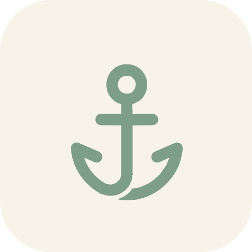
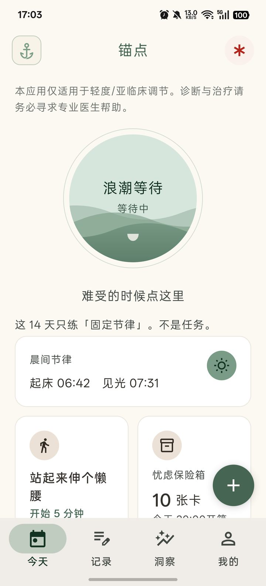
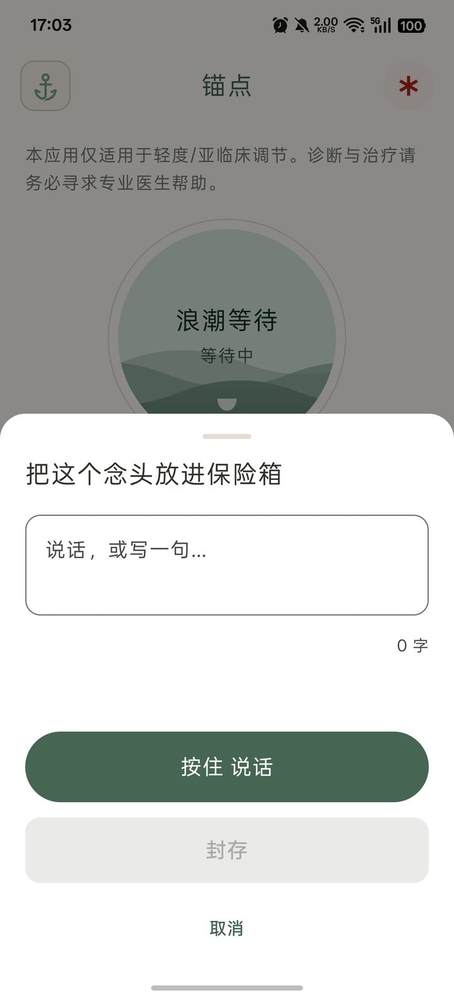
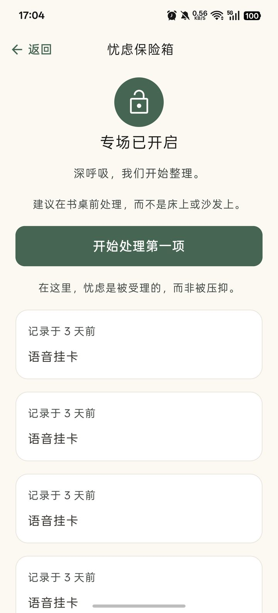
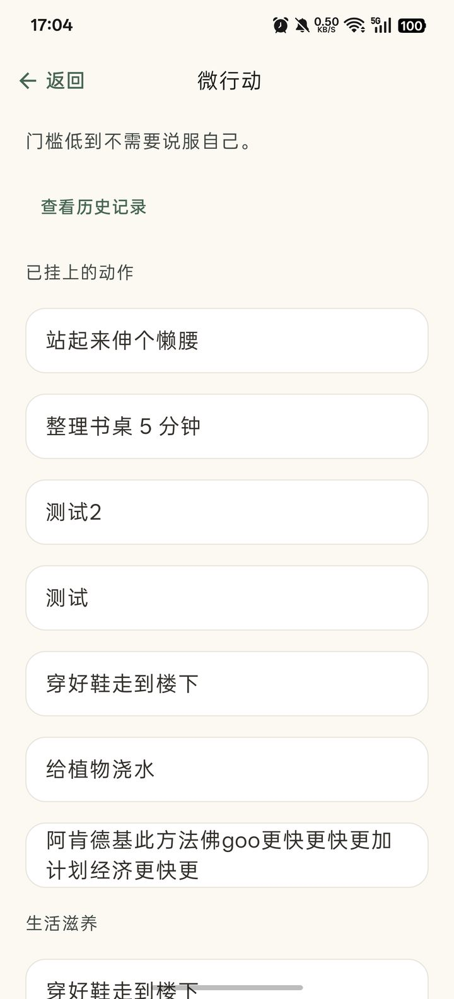
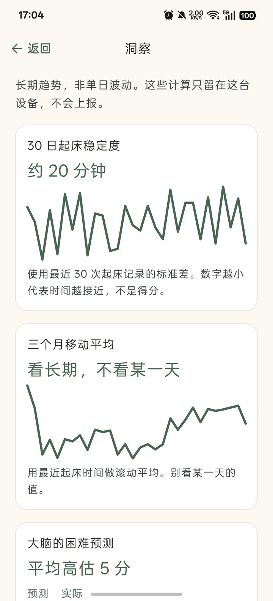
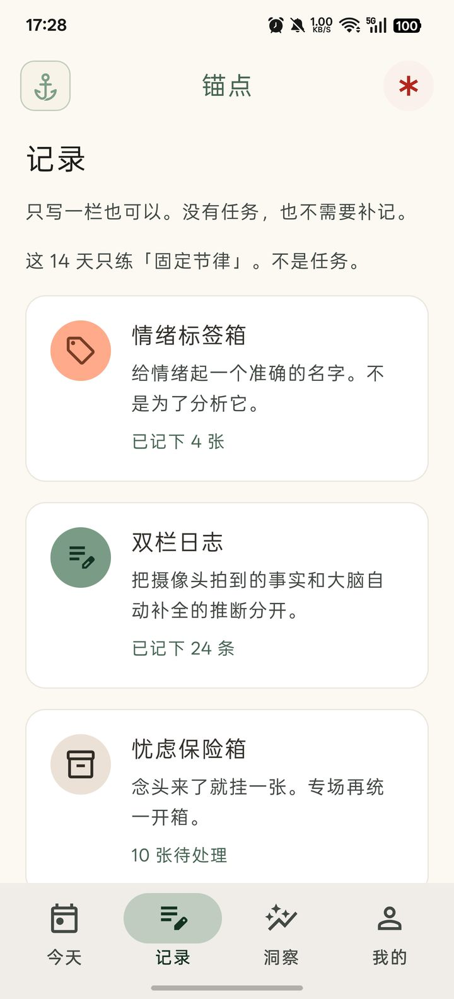
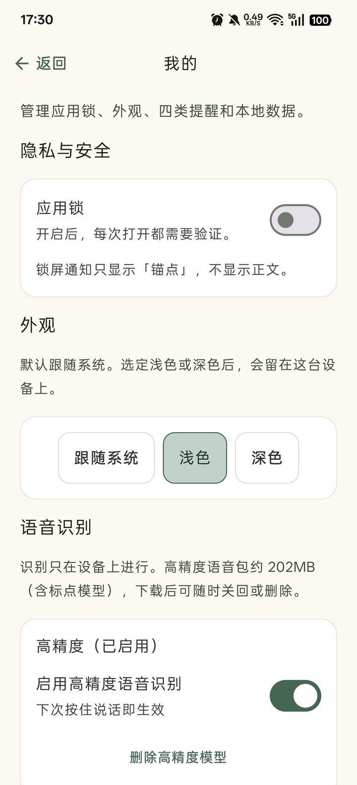
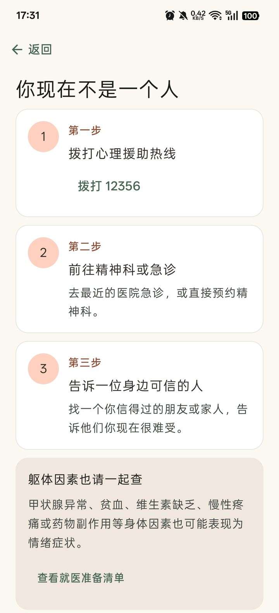

锚点 Anchor
一款不讲鸡汤、不强求「积极想开」的微行为辅助应用。
用极简动作和事实记录改变输入，而不是说服自己。
本应用不是医疗诊断或治疗工具，仅适用于轻度 / 亚临床情绪调节。出现中重度症状、自伤或轻生念头时，请寻求专业医疗帮助——应用内也有随时可打开的帮助入口。
为什么是锚点
三个朴素的设计决定
改变输入，而不是说服自己
情绪不是被道理说服的，是被微小的行为和事实慢慢挪动的。锚点里的每个练习都很小——小到不需要说服自己就可以开始。
没有羞耻机制
没有连续打卡、没有完成率、没有补卡、没有「好久没来了」。断档不警告，洞察只呈现客观计数，永不出现百分比和 KPI。
数据只属于你
没有账号、后端、云同步、埋点或广告。记录在本机加密存储，锁屏通知只显示「锚点」。开发者打不开你的手机。
功能导览
一看就懂的日常
以下截图来自真机。左右滑动浏览。








| 模块 | 做什么 |
|---|---|
| 浪潮等待 | 难受时：承认 → 定位身体受压处 → 等 10 分钟，不对抗 |
| 情绪标签箱 | 从具体词库起名，写成一句可看见的对象 |
| 双栏日志 | 左栏摄像头事实，右栏大脑推断；只写一栏也可以 |
| 忧虑保险箱 | 白天速记封存，默认 20:00 专场开箱处理 |
| 微行动 | 5 分钟低门槛动作，记下预测 vs 实际；可翻历史证据 |
| 起床 · 见光 | 两个独立记录点，洞察里看稳定度（分钟），不是得分 |
| 关系与利他 | 表演耗竭盘点、回血/抽干账本、默认非社交的微小利他 |
| 语音速记 | 按住说话离线转文字，端侧识别四级兜底，全程不联网 |
| 就医与帮助 | 地区化热线与就诊准备；大陆 / 港 / 澳 / 台 / 美 / 英 / 日 |
安全设计
心理类应用的信任，从边界开始
首启评估
PHQ-9 + GAD-7 双量表（版权 Pfizer，仅筛查参考，不是诊断）。
危机引导
自伤相关题目 > 0 分立即进入危机说明，地区化热线号码交给系统拨号盘。
就医等待期
中重度分档自动暂停练习入口——不是惩罚。就医指南与仅记录功能保持可用。
温和提醒
四类提醒默认可关闭，关掉不挽留。锁屏只显示「锚点」，不显示正文。
隐私承诺
记录不出这台设备
- 加密存储SQLCipher 加密 + Keystore 包裹随机密钥；商店版无网络权限。
- 通知不泄密锁屏只显示「锚点」，正文仅在解锁后可见。
- 导出密码不落盘PBKDF2 + AES-GCM；密码当场输入、用后即清，遗失无法恢复。
- 识别不联网端侧语音识别；无可用模型时回落纯录音，绝不转在线识别。
- 无追踪无崩溃上报、无分析 SDK、无广告；隐私门禁脚本守护每一行代码。
获取与安装
内部测试阶段
- 从 GitHub Releases 下载
anchor-internal-*.apk（标准渠道，提醒更准时）或anchor-internal-play-*.apk（Play 渠道）。 - 若手机上已有 Debug 签名的锚点：先在应用内加密导出，卸载后再安装（签名不同不能覆盖）。
- 开发者可自行构建：
./gradlew :androidApp:assembleStandardDebug。